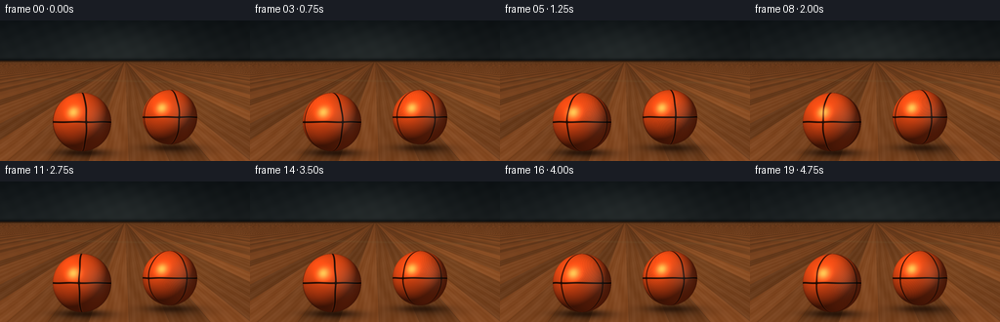
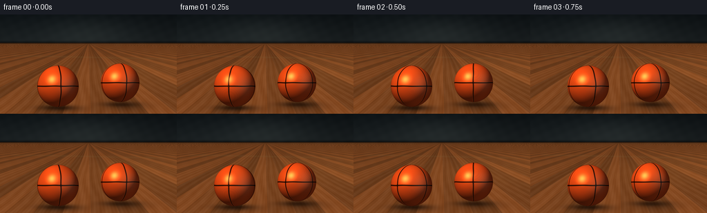

CODING AGENTS AS PIXEL WORLD MODELS
traex/DeepSeek-V4.1-Flash · instance_preservation_0026
点击播放 · 原生 RGB 像素
逐轮保存的候选
回放视频、检查图与代码变化。
每份候选均可单独播放。实际图片检查记录在下方工具轨迹中。
候选 01播放与检查图
点击播放 · 原生 RGB 像素


展开代码变化
--- 上一保存版本
+++ 本次保存版本
@@ -0,0 +1,261 @@
+from pathlib import Path
+
+import numpy as np
+from PIL import Image, ImageFilter
+
+import artifact_io
+
+
+W, H = 256, 144
+FPS = 4
+FRAMES = 20
+SS = 4
+RW, RH = W * SS, H * SS
+
+
+def smoothstep(edge0, edge1, x):
+ t = np.clip((x - edge0) / (edge1 - edge0), 0.0, 1.0)
+ return t * t * (3.0 - 2.0 * t)
+
+
+def make_background():
+ yy, xx = np.mgrid[0:RH, 0:RW].astype(np.float32)
+ x = xx / RW
+ y = yy / RH
+
+ # Quiet, slightly blue arena wall behind the court.
+ wall = np.zeros((RH, RW, 3), dtype=np.float32)
+ top = np.array([0.055, 0.075, 0.085], dtype=np.float32)
+ bottom = np.array([0.115, 0.135, 0.140], dtype=np.float32)
+ wall[:] = top + (bottom - top) * np.clip(y / 0.31, 0.0, 1.0)[..., None]
+
+ # Soft pool of overhead light centered behind the two balls.
+ glow = np.exp(-(((x - 0.50) / 0.38) ** 2 + ((y - 0.20) / 0.25) ** 2) * 2.2)
+ wall += glow[..., None] * np.array([0.045, 0.048, 0.044], dtype=np.float32)
+ wall *= (0.93 + 0.07 * np.cos((x - 0.2) * 3.1))[..., None]
+
+ # Warm maple floor. Perspective-scaled boards make the low camera read clearly.
+ floor = np.zeros_like(wall)
+ horizon = 0.285 * RH
+ depth = np.maximum(yy - horizon, 1.0)
+ perspective = 18.0 / (depth / RH)
+ floor_x = (xx - RW * 0.5) * perspective / RW
+
+ board_width = 4.1
+ board_id = np.floor((floor_x + 1000.0) / board_width).astype(np.int32)
+ board_tone = 0.5 + 0.5 * np.sin(board_id * 2.173 + 0.8)
+ floor_depth = np.clip((yy - horizon) / (RH - horizon), 0.0, 1.0)
+
+ base = np.empty_like(wall)
+ base[..., 0] = 0.35 + 0.105 * board_tone + 0.075 * floor_depth
+ base[..., 1] = 0.195 + 0.055 * board_tone + 0.045 * floor_depth
+ base[..., 2] = 0.090 + 0.026 * board_tone + 0.022 * floor_depth
+
+ # Long grain and board seams.
+ grain = (
+ 0.016 * np.sin(floor_x * 3.2 + np.sin(yy * 0.021) * 2.0)
+ + 0.009 * np.sin(floor_x * 11.0 + yy * 0.018)
+ )
+ seam_phase = np.abs(((floor_x + 1000.0) % board_width) - board_width * 0.5)
+ board_seam = np.exp(-((board_width * 0.5 - seam_phase) / 0.026) ** 2)
+ floor[:] = base + grain[..., None]
+ floor *= (1.0 - 0.19 * board_seam[..., None])
+
+ # Satin finish: a broad, low-contrast reflection band.
+ sheen = np.exp(-((y - 0.57) / 0.19) ** 2) * (0.28 + 0.72 * smoothstep(0.28, 0.8, x))
+ floor += sheen[..., None] * np.array([0.070, 0.048, 0.024], dtype=np.float32)
+
+ floor_mask = smoothstep(horizon - 1.0, horizon + 1.0, yy)
+ image = wall * (1.0 - floor_mask[..., None]) + floor * floor_mask[..., None]
+
+ # Baseboard and a restrained court line at the back of the key.
+ board = np.exp(-((yy - horizon) / (2.2 * SS)) ** 2)
+ image *= 1.0 - 0.50 * board[..., None]
+ image += np.exp(-((yy - horizon - 2.0 * SS) / (0.7 * SS)) ** 2)[..., None] * np.array(
+ [0.07, 0.055, 0.035], dtype=np.float32
+ )
+
+ line_y = 0.43 * RH + 0.018 * RH * np.sin((xx / RW - 0.5) * 2.2)
+ line = np.exp(-((yy - line_y) / (1.05 * SS)) ** 2)
+ line *= smoothstep(0.04, 0.10, x) * (1.0 - smoothstep(0.91, 0.97, x))
+ image = image * (1.0 - 0.18 * line[..., None]) + line[..., None] * np.array(
+ [0.46, 0.37, 0.22], dtype=np.float32
+ ) * 0.18
+
+ # Fine film-like variation keeps the procedural floor from looking plastic.
+ noise = (
+ np.sin(xx * 0.071 + yy * 0.037)
+ * np.sin(xx * 0.019 - yy * 0.083)
+ * 0.005
+ )
+ image += noise[..., None]
+ return np.clip(image, 0.0, 1.0)
+
+
+def make_contact_shadows(background):
+ yy, xx = np.mgrid[0:RH, 0:RW].astype(np.float32)
+ image = background.copy()
+ for cx, cy, radius, strength in (
+ (84.0 * SS, 133.0 * SS, 31.0 * SS, 0.60),
+ (174.0 * SS, 128.0 * SS, 30.0 * SS, 0.54),
+ ):
+ dx = (xx - cx) / (radius * 1.12)
+ dy = (yy - (cy + 2.0 * SS)) / (5.0 * SS)
+ contact = np.exp(-(dx * dx + dy * dy) * 2.0)
+ wide_dx = (xx - (cx + 9.0 * SS)) / (radius * 1.30)
+ wide_dy = (yy - (cy + 5.5 * SS)) / (7.2 * SS)
+ soft = np.exp(-(wide_dx * wide_dx + wide_dy * wide_dy) * 1.55)
+ shadow = np.clip(contact * strength + soft * 0.20, 0.0, 0.72)
+ image *= 1.0 - shadow[..., None]
+ # A small warm bounce right beneath the ball.
+ bounce = np.exp(-(((xx - cx) / (radius * 0.52)) ** 2 + ((yy - cy - 2 * SS) / (2.3 * SS)) ** 2))
+ image += bounce[..., None] * np.array([0.050, 0.020, 0.006], dtype=np.float32)
+ return np.clip(image, 0.0, 1.0)
+
+
+def render_ball(cx, cy, radius, spin, seed):
+ pad = int(np.ceil(radius + 4 * SS))
+ x0, x1 = max(0, int(cx) - pad), min(RW, int(cx) + pad)
+ y0, y1 = max(0, int(cy) - pad), min(RH, int(cy) + pad)
+ yy, xx = np.mgrid[y0:y1, x0:x1].astype(np.float32)
+
+ nx = (xx + 0.5 - cx) / radius
+ ny = -(yy + 0.5 - cy) / radius
+ rr = nx * nx + ny * ny
+ inside = rr <= 1.0
+ nz = np.sqrt(np.maximum(1.0 - rr, 0.0))
+ normal = np.stack((nx, ny, nz), axis=-1)
+
+ # Basketball fixed in the world, sampled in its own rotating frame.
+ ca, sa = np.cos(spin), np.sin(spin)
+ px = ca * normal[..., 0] - sa * normal[..., 2]
+ py = normal[..., 1]
+ pz = sa * normal[..., 0] + ca * normal[..., 2]
+
+ # Three orthogonal panel seams read as a regulation-style basketball.
+ seam_width = 0.030
+ seam_x = np.exp(-((px + 0.009 * np.sin(py * 8.0 + seed)) / seam_width) ** 2)
+ seam_y = np.exp(-((py + 0.006 * np.sin(px * 7.0 + seed * 0.7)) / seam_width) ** 2)
+ seam_z = np.exp(-((pz + 0.006 * np.sin(py * 9.0 - seed)) / seam_width) ** 2)
+ seam = np.clip(seam_x + seam_y + seam_z, 0.0, 1.0)
+ seam_edge = np.clip(seam * 1.30, 0.0, 1.0)
+
+ # Fine pebbled leather, with larger tonal variation across the panels.
+ grain = (
+ 0.50
+ + 0.20 * np.sin(px * 131.0 + py * 79.0 + seed)
+ + 0.16 * np.sin(px * 223.0 - py * 167.0 + 1.7)
+ + 0.14 * np.sin((px + pz) * 311.0 + py * 113.0)
+ )
+ grain = 0.93 + 0.075 * grain
+ panel_variation = 1.0 + 0.030 * np.sin(px * 5.4 + seed) * np.cos(py * 4.2)
+
+ light = np.array([-0.58, 0.64, 0.66], dtype=np.float32)
+ light /= np.linalg.norm(light)
+ diffuse = np.maximum(np.sum(normal * light, axis=-1), 0.0)
+ fill_dir = np.array([0.62, 0.22, 0.72], dtype=np.float32)
+ fill_dir /= np.linalg.norm(fill_dir)
+ fill = np.maximum(np.sum(normal * fill_dir, axis=-1), 0.0)
+
+ orange = np.array([0.90, 0.285, 0.075], dtype=np.float32)
+ color = orange[None, None, :] * (
+ 0.18 + 0.91 * diffuse[..., None] + 0.18 * fill[..., None]
+ )
+ color *= (grain * panel_variation)[..., None]
+
+ # Dark recessed seams with a thin warm lip.
+ color *= (1.0 - 0.87 * seam_edge[..., None])
+ color += (seam_edge * (1.0 - seam_edge) * 4.0)[..., None] * np.array(
+ [0.11, 0.035, 0.008], dtype=np.float32
+ )
+
+ # Soft leather sheen plus a compact highlight.
+ half = light + np.array([0.0, 0.0, 1.0], dtype=np.float32)
+ half /= np.linalg.norm(half)
+ spec = np.maximum(np.sum(normal * half, axis=-1), 0.0) ** 42.0
+ color += (
+ spec[..., None]
+ * np.array([0.78, 0.48, 0.25], dtype=np.float32)
+ * (1.0 - 0.55 * seam)[..., None]
+ )
+
+ # Cool rim from the arena and a warm floor bounce at the bottom.
+ rim = np.clip((normal[..., 0] * 0.45 + normal[..., 1] * 0.12 + normal[..., 2] * 0.86), 0.0, 1.0)
+ rim = rim ** 8.0
+ color += rim[..., None] * np.array([0.12, 0.16, 0.17], dtype=np.float32) * 0.55
+ bounce = np.maximum(-normal[..., 1], 0.0) ** 2.0
+ color += bounce[..., None] * np.array([0.11, 0.035, 0.010], dtype=np.float32)
+
+ # Darken the extreme silhouette so the sphere sits cleanly on the court.
+ edge = smoothstep(0.985, 1.0, np.sqrt(rr))
+ color *= 1.0 - 0.28 * edge[..., None]
+
+ alpha = inside.astype(np.float32)
+ rgba = np.concatenate((np.clip(color, 0.0, 1.0), alpha[..., None]), axis=-1)
+ return (x0, y0, x1, y1), rgba
+
+
+def composite_rgba(dst, bounds, rgba):
+ x0, y0, x1, y1 = bounds
+ alpha = rgba[..., 3:4]
+ dst[y0:y1, x0:x1] = dst[y0:y1, x0:x1] * (1.0 - alpha) + rgba[..., :3] * alpha
+
+
+def add_reflection(image, bounds, rgba, contact_y):
+ x0, y0, x1, y1 = bounds
+ h, w = y1 - y0, x1 - x0
+ layer = Image.fromarray(np.uint8(np.clip(rgba * 255.0, 0, 255)))
+ layer = layer.transpose(Image.Transpose.FLIP_TOP_BOTTOM)
+ layer = layer.filter(ImageFilter.GaussianBlur(2.4 * SS))
+ arr = np.asarray(layer).astype(np.float32) / 255.0
+
+ dest_y0 = max(0, int(round(y1 - 1.0 * SS)))
+ dest_y1 = min(RH, dest_y0 + h)
+ if dest_y1 <= dest_y0:
+ return
+
+ src = arr[: dest_y1 - dest_y0, :, :]
+ if src.shape[0] != dest_y1 - dest_y0:
+ return
+
+ fade = np.linspace(0.20, 0.0, src.shape[0], dtype=np.float32)[:, None, None] ** 1.4
+ alpha = src[..., 3:4] * fade
+ image[dest_y0:dest_y1, x0:x1] = (
+ image[dest_y0:dest_y1, x0:x1] * (1.0 - alpha) + src[..., :3] * alpha
+ )
+
+
+def render_frame(index):
+ background = make_contact_shadows(make_background())
+ # Right ball sits slightly deeper in the scene. Its slower counter-spin gives
+ # the pair readable opposing motion even at the deliberately low frame rate.
+ balls = [
+ (174.0 * SS, 99.0 * SS, 28.0 * SS, -0.97 * index + 0.35, 2.7),
+ (84.0 * SS, 104.0 * SS, 30.0 * SS, 1.12 * index + 0.15, 0.9),
+ ]
+
+ layers = []
+ for cx, cy, radius, spin, seed in balls:
+ bounds, rgba = render_ball(cx, cy, radius, spin, seed)
+ layers.append((cx, cy, radius, bounds, rgba))
+
+ # Reflections are laid down before the spheres.
+ for cx, cy, radius, bounds, rgba in layers:
+ add_reflection(background, bounds, rgba, cy + radius)
+ for cx, cy, radius, bounds, rgba in layers:
+ composite_rgba(background, bounds, rgba)
+
+ final = Image.fromarray(np.uint8(np.clip(background * 255.0, 0, 255)), "RGB")
+ final = final.resize((W, H), Image.Resampling.LANCZOS)
+ return np.asarray(final, dtype=np.uint8)
+
+
+def main():
+ case_dir = Path(__file__).resolve().parent
+ frames = np.stack([render_frame(i) for i in range(FRAMES)], axis=0)
+ artifact_io.save(frames, case_dir)
+ print(f"saved {frames.shape} RGB video to {case_dir}")
+
+
+if __name__ == "__main__":
+ main()
候选 02播放与检查图
点击播放 · 原生 RGB 像素

展开代码变化
--- 上一保存版本
+++ 本次保存版本
@@ -201,7 +201,7 @@
dst[y0:y1, x0:x1] = dst[y0:y1, x0:x1] * (1.0 - alpha) + rgba[..., :3] * alpha
-def add_reflection(image, bounds, rgba, contact_y):
+def add_reflection(image, bounds, rgba):
x0, y0, x1, y1 = bounds
h, w = y1 - y0, x1 - x0
layer = Image.fromarray(np.uint8(np.clip(rgba * 255.0, 0, 255)))
@@ -225,8 +225,8 @@
)
-def render_frame(index):
- background = make_contact_shadows(make_background())
+def render_frame(index, court):
+ background = court.copy()
# Right ball sits slightly deeper in the scene. Its slower counter-spin gives
# the pair readable opposing motion even at the deliberately low frame rate.
balls = [
@@ -241,18 +241,19 @@
# Reflections are laid down before the spheres.
for cx, cy, radius, bounds, rgba in layers:
- add_reflection(background, bounds, rgba, cy + radius)
+ add_reflection(background, bounds, rgba)
for cx, cy, radius, bounds, rgba in layers:
composite_rgba(background, bounds, rgba)
- final = Image.fromarray(np.uint8(np.clip(background * 255.0, 0, 255)), "RGB")
+ final = Image.fromarray(np.uint8(np.clip(background * 255.0, 0, 255)))
final = final.resize((W, H), Image.Resampling.LANCZOS)
return np.asarray(final, dtype=np.uint8)
def main():
case_dir = Path(__file__).resolve().parent
- frames = np.stack([render_frame(i) for i in range(FRAMES)], axis=0)
+ court = make_contact_shadows(make_background())
+ frames = np.stack([render_frame(i, court) for i in range(FRAMES)], axis=0)
artifact_io.save(frames, case_dir)
print(f"saved {frames.shape} RGB video to {case_dir}")
可观测工具轨迹
实际执行的命令与返回图片。
命令 1exit 0
/bin/bash -c "pwd && rg --files -g 'prompt.txt' -g 'GENERATION_RULES.md' -g 'task_spec.json' -g '"'!node_modules'"'"
命令 2exit 0
/bin/bash -c 'ls -la'
命令 3exit 0
/bin/bash -c 'cat prompt.txt'
命令 4exit 0
/bin/bash -c 'cat GENERATION_RULES.md'
命令 5exit 0
/bin/bash -c 'cat task_spec.json'
命令 6exit 0
/bin/bash -c "sed -n '1,240p' artifact_io.py && printf '\\n---PLAYER---\\n' && sed -n '1,240p' player_template.html"
命令 7exit 1
/bin/bash -c 'python generate.py'
命令 8exit 1
/bin/bash -c 'python generate.py'
命令 9exit 1
/bin/bash -c 'python generate.py'
命令 10exit 0
/bin/bash -c 'python generate.py'
命令 11exit 0
/bin/bash -c 'command -v chafa || true; command -v viu || true; command -v img2txt || true; command -v ffmpeg || true'
命令 12exit 0
/bin/bash -c "ls -lh frames pixels.npz inspection.png transition_check.png index.html && python - <<'PY'
from PIL import Image
import numpy as np
for name in ['inspection.png','transition_check.png','frames/00.png','frames/10.png','frames/19.png']:
im=np.asarray(Image.open(name).convert('RGB'))
print(name, im.shape, 'mean', im.mean(axis=(0,1)).round(1), 'range', im.min(), im.max())
a=np.asarray(Image.open('frames/00.png')).astype(int)
b=np.asarray(Image.open('frames/10.png')).astype(int)
print('frame 0->10 mean abs diff', np.abs(a-b).mean().round(2), 'changed px', np.any(a"'!=b,axis=-1).sum())
PY'命令 13exit 0
/bin/bash -c "python - <<'PY'
import json
from pathlib import Path
p=json.loads(Path('task_spec.json').read_text())
print('spec', p)
print('files', sorted(x.name for x in Path('.').iterdir()))
PY"命令 14exit 0
/bin/bash -c "python - <<'PY'
from PIL import Image
import numpy as np
im=np.asarray(Image.open('frames/00.png').convert('RGB')).astype(float)/255
# 2x2 average then luminance ramp
for y in range(0,144,4):
line=''
for x in range(0,256,4):
c=im[y:y+4,x:x+4].mean((0,1))
lum=.2126*c[0]+.7152*c[1]+.0722*c[2]
# orange if red dominates
orange=c[0]>c[1]*1.55 and c[0]>c[2]*1.8 and c[0]>.25
dark=c.max()<.17
ch=' ' if dark else '.:-=+*#%@'[min(8,int(lum*12))]
line += ch
print(line.rstrip())
PY"命令 15exit 0
/bin/bash -c "python - <<'PY'
from PIL import Image
import numpy as np
for fi in [0,1,5,10,15,19]:
im=np.asarray(Image.open(f'frames/{fi:02d}.png').convert('RGB')).astype(int)
m=(im[:,:,0]>im[:,:,1]*1.5)&(im[:,:,0]>im[:,:,2]*1.8)&(im[:,:,0]>70)
ys,xs=np.nonzero(m)
print(fi, 'orange bbox', (xs.min(),ys.min(),xs.max(),ys.max()), 'n',len(xs))
# rough connected spans
for xlo,xhi in [(30,130),(130,230)]:
mm=m[:,xlo:xhi]
yy,xx=np.nonzero(mm)
if len(xx): print(' ',xlo, (xx.min()+xlo,yy.min(),xx.max()+xlo,yy.max()), len(xx))
PY"命令 16exit 0
/bin/bash -c "python - <<'PY'
from PIL import Image
import numpy as np
for fi in [0,1,2,10,19]:
im=np.asarray(Image.open(f'frames/{fi:02d}.png').convert('RGB')).astype(int)
for cx in [84,174]:
patch=im[65:135,cx-35:cx+35]
m=(patch[:,:,0]>patch[:,:,1]*1.45)&(patch[:,:,0]>patch[:,:,2]*1.7)&(patch[:,:,0]>65)
yy,xx=np.nonzero(m)
print(fi,cx,(xx.min()+cx-35,yy.min()+65,xx.max()+cx-35,yy.max()+65), len(xx))
PY"命令 17exit 0
/bin/bash -c "python - <<'PY'
from PIL import Image
import numpy as np
im=np.asarray(Image.open('frames/00.png')).astype(np.float32)/255
# Character map with better contrast and color classes.
for y in range(8,140,3):
line=''
for x in range(0,256,3):
c=im[y:y+3,x:x+3].mean((0,1)); lum=c @ [.2126,.7152,.0722]
r,g,b=c
if r>g*1.65 and r>b*2 and r>.32: ch='O' if lum<.5 else 'X'
elif lum<.16: ch=' '
else: ch=' .:-=+*#%@'[min(9,int(lum*16))]
line+=ch
print(line.rstrip())
PY"命令 18exit 0
/bin/bash -c "python - <<'PY'
from PIL import Image
import numpy as np
for fi in [0,1,2,3,4,5,10,15,19]:
im=np.asarray(Image.open(f'frames/{fi:02d}.png')).astype(float)
a=im[90:130,60:110]
print(fi, 'ball mean rgb', a.mean((0,1)).round(1), 'max',a.max((0,1)).round(1))
PY"命令 19exit 0
/bin/bash -c "python - <<'PY'
from PIL import Image
im=Image.open('frames/00.png')
im.crop((44,65,214,138)).resize((680,292),Image.Resampling.NEAREST).save('.tmp/balls_crop.png')
print('.tmp/balls_crop.png')
PY"命令 20exit 0
/bin/bash -c "python - <<'PY'
from pathlib import Path
from PIL import Image
import numpy as np, json
frames=np.stack([np.asarray(Image.open(p).convert('RGB')) for p in sorted(Path('frames').glob('*.png'))])
data=np.load('pixels.npz')['pixels']
dec=np.stack([((data[:,:,i]>>16)&255, (data[:,:,i]>>8)&255, data[:,:,i]&255) for i in range(20)],axis=-1).transpose(3,0,1,2).astype(np.uint8)
print('png', frames.shape, frames.dtype, 'decoded', dec.shape, dec.dtype, 'exact', np.array_equal(frames,dec))
for i in range(1,20):
d=np.abs(frames[i].astype(int)-frames[i-1].astype(int))
for name,(x0,y0,x1,y1) in {'left':(48,68,120,137),'right':(138,67,212,132)}.items():
q=d[y0:y1,x0:x1]
if i in (1,5,10,19): print(f'{i:02d} {name}: mad={q.mean():.2f}, changed={np.any(q>2,axis=-1).sum()}')
print('unique frames', len({f.tobytes() for f in frames}))
print('html bytes', Path('index.html').stat().st_size, 'caption', json.loads(Path('task_spec.json').read_text())['frames'])
PY"命令 21exit 0
/bin/bash -c "python - <<'PY'
from pathlib import Path
from PIL import Image
import numpy as np
frames=np.stack([np.asarray(Image.open(p).convert('RGB')) for p in sorted(Path('frames').glob('*.png'))])
data=np.load('pixels.npz')['pixels'] # y, x, frame
packed=np.moveaxis(data,-1,0)
dec=np.stack([packed>>16,(packed>>8)&255,packed&255],axis=-1).astype(np.uint8)
print('packed shape',packed.shape,'decoded',dec.shape,'exact',np.array_equal(frames,dec))
print('luma range', frames.min(),frames.max(),'alpha none')
PY"命令 22exit 0
/bin/bash -c 'time python generate.py'
命令 23exit 0
/bin/bash -c "python - <<'PY'
from pathlib import Path
from PIL import Image
import numpy as np, json, py_compile
py_compile.compile('generate.py', doraise=True)
frames=np.stack([np.asarray(Image.open(p).convert('RGB')) for p in sorted(Path('frames').glob('*.png'))])
packed=np.moveaxis(np.load('pixels.npz')['pixels'],-1,0)
dec=np.stack([packed>>16,(packed>>8)&255,packed&255],axis=-1).astype(np.uint8)
spec=json.loads(Path('task_spec.json').read_text())
assert frames.shape == (spec['frames'],spec['height'],spec['width'],3)
assert frames.dtype == np.uint8 and np.array_equal(frames,dec)
assert len({f.tobytes() for f in frames}) == spec['frames']
print('OK: 20 unique uint8 RGB frames, 256x144; pixels.npz exactly matches PNGs')
print('artifacts:', ', '.join(sorted(p.name for p in Path('.').iterdir() if p.is_file())))
PY"保存候选 2 份；完成命令 23 次；可验证图片返回 0 张。原始 API 响应与完整日志保留在本地。